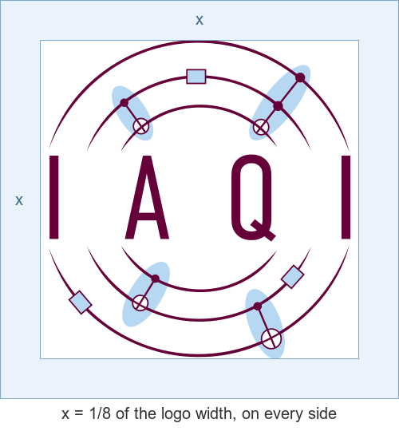
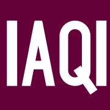
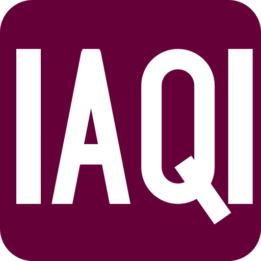
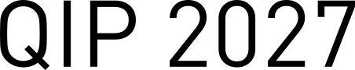
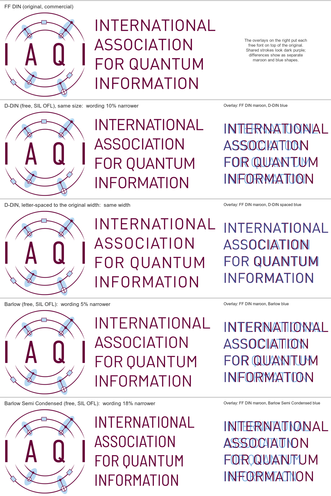

Which file to use
Prefer SVG: it is sharp at every size and is the smallest file. Use PNG when a tool doesn't take SVG, and JPEG only when it can't take a transparent PNG either.
| You are making… | Use | Download |
|---|---|---|
| A website header or navigation bar | Horizontal logo, or the mark when space is tight | horizontal.svg · mark.svg |
| A browser tab icon, or a phone home-screen icon | Favicon set | see Favicon |
| Slides: the title slide | Full logo, coloured | logo-coloured.svg |
| Slides: the footer of every slide | Horizontal logo, or the mark | horizontal.svg |
| Letterheads, posters, programme booklets | Full or horizontal logo | logo.svg · horizontal.svg |
| An email signature | Horizontal logo, 240×56 | horizontal-240x56.png |
| A social-media avatar | The mark on white, or the white mark on maroon | mark-200.png · mark-white.jpg |
| Anything on maroon, dark or photo backgrounds | White variants | logo-white.svg · horizontal-white.svg · mark-white.svg |
| Single-colour print (stamps, embossing, newspaper) | Black variants | logo-black.svg · mark-black.svg |


Logo variants
The logo is the mark plus the wording "International Association for Quantum Information". The mark is the rings with "IAQI" alone; use it when the full name already appears nearby or there is no room for the wording. Each card starts on its recommended background; the dots let you try others.
Colours
Click a colour to copy its hex value. The CMYK and Pantone values for print are still to be supplied by the designer; until then, give printers the hex values and a vector file.
Contrast: maroon and white 13:1, so text either way round passes WCAG AAA. Maroon on light blue is 8.7:1. Light blue on white is only 1.5:1: never use it for text or thin lines on white.
Clear space and minimum size recommended
These are recommendations, not rules set by the designer.

Clear space
Keep at least ⅛ of the logo's width free of text and other graphics on every side.
Shown at actual size.
Minimum size
- Mark: 48px on screen, about 12mm in print. Below that, use the favicon.
- Full logo with wording: 200px wide, about 30mm in print. Below that the wording can't be read, so use the mark.
- Horizontal logo: 56px tall, the size of the 240×56 PNG.
Favicon and app icons
The rings blur into nothing at browser-tab size, so the favicon is a separate drawing: "IAQI" in white on a maroon tile.

iPhone (180px)
App icon (512px)


Copy the files to the root of your site and add this to <head>:
<link rel="icon" href="/favicon.ico" sizes="any"> <link rel="icon" type="image/svg+xml" href="/favicon.svg"> <link rel="apple-touch-icon" href="/apple-touch-icon.png"> <link rel="manifest" href="/site.webmanifest">
Don'ts
Use the artwork as supplied. The only allowed colour change is switching to the black or white variant.
Typography
Never retype the logo wording; always use the artwork. The SVGs have it converted to outlines, so nobody needs the logo font just to use the logo.
FF DIN · commercial

The logo font (Albert-Jan Pool, FontShop, now Monotype). Only needed to make new logo artwork; requires a licence, so it isn't distributed here.
D-DIN · free, SIL OFL
QIP 2027
Headings and design work in IAQI's style: posters, slides in Keynote or PowerPoint, websites. Included in this repo. This page's headings are set in it.
How close are the free fonts?
Each row sets the logo wording in another font; the overlay on the right puts it on top of the original.

- D-DIN follows DIN 1451, the design FF DIN is based on, so the letter shapes are almost the same. It is about 10% narrower; with letter-spacing of +0.06em it matches FF DIN's width and the overlay is nearly identical.
- Barlow is closer in width but rounder: the O, C, S and the tail of the Q visibly differ.
- Barlow Semi Condensed is 18% narrower and doesn't match.
D-DIN is close enough for headings next to the logo, but not for altering the logo itself.
Usage terms
The IAQI name and logo belong to IAQI and are not under an open licence. They may be used to refer to IAQI, its conferences (QIP, QCrypt, TQC) and activities IAQI supports, following this guide. For any other use, contact IAQI.